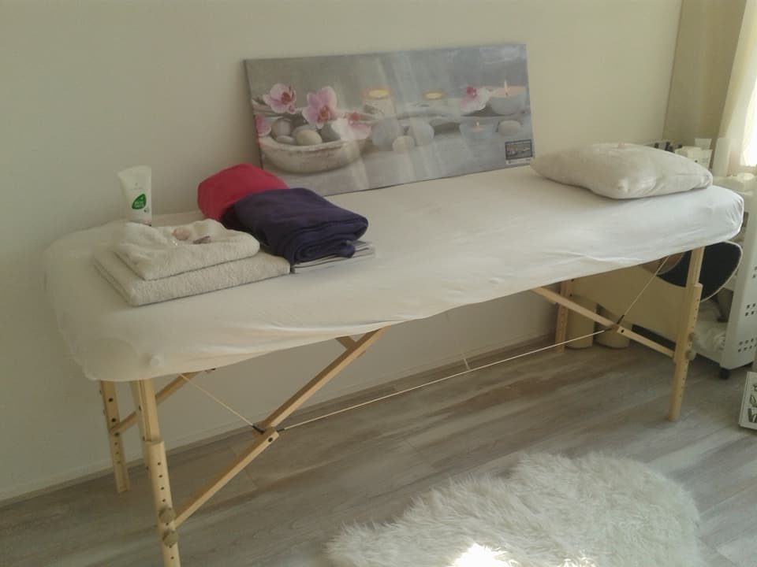
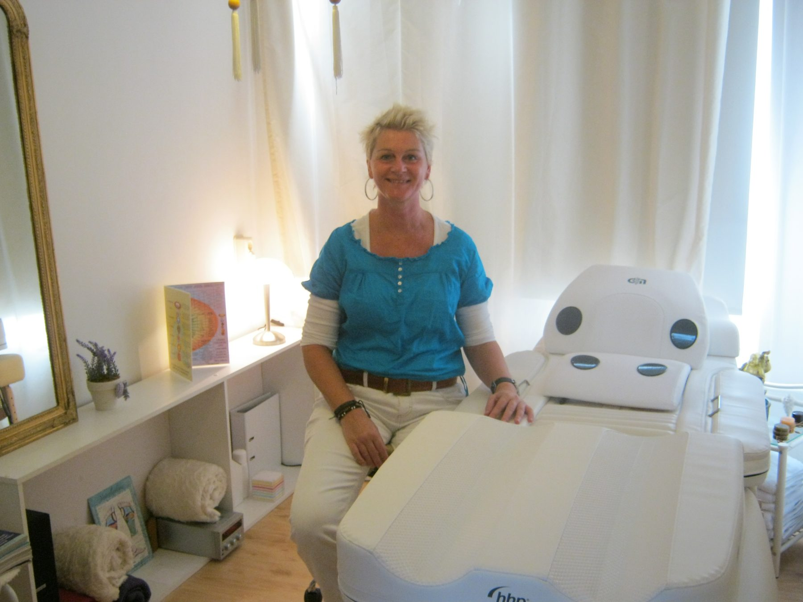
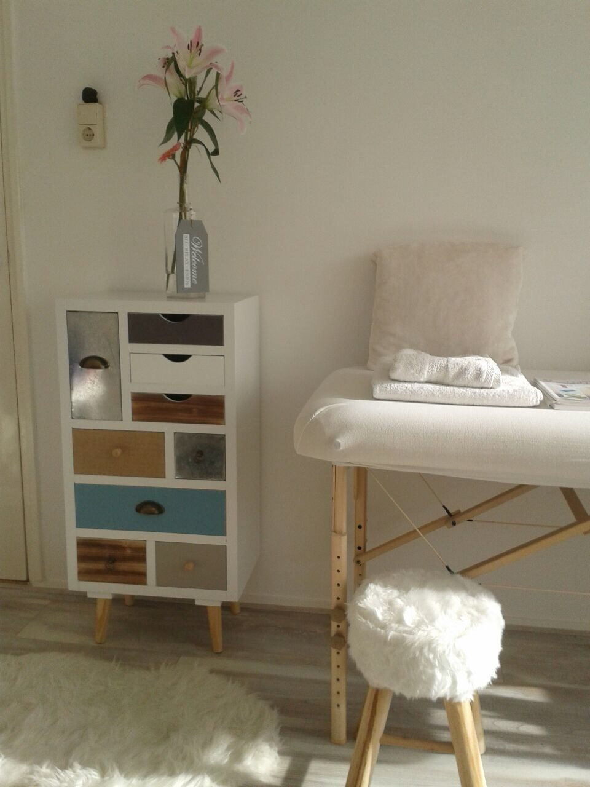
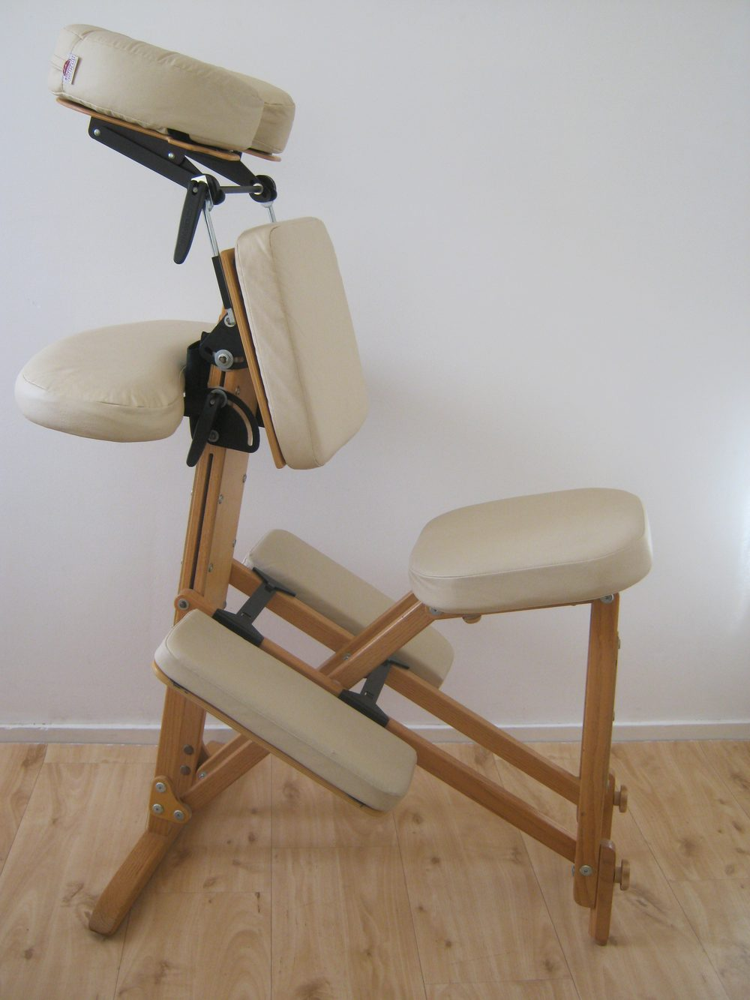
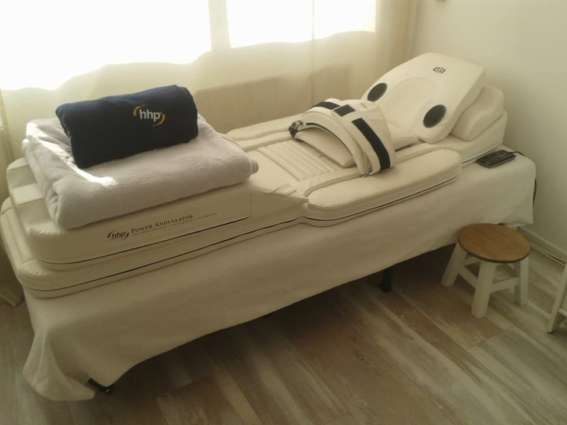
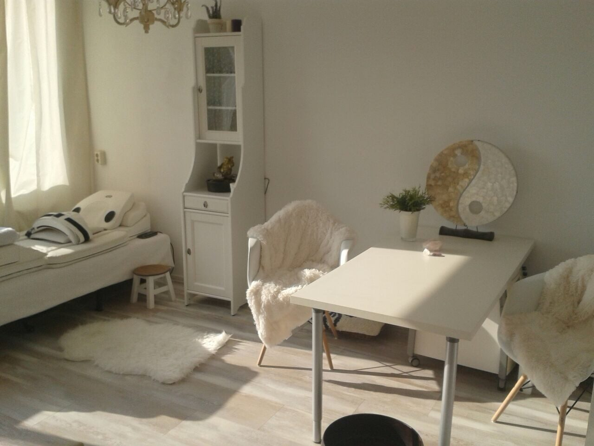
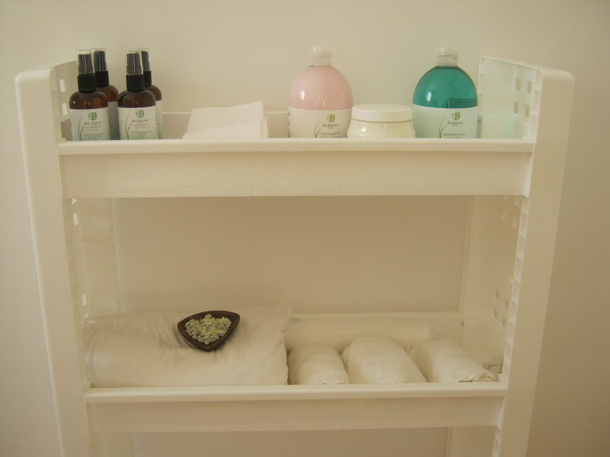
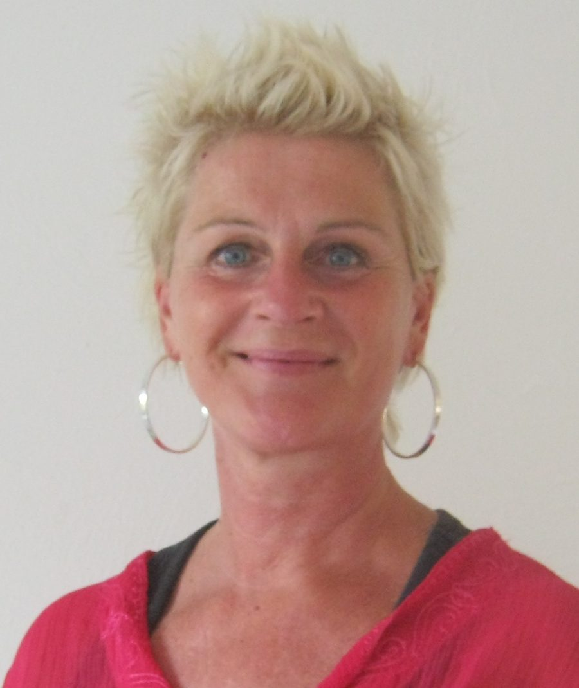

Ontspanningsmassage
Nek, schouders en rug, plus handen en voeten via speciale ontstress-drukpunten. Uit je hoofd, in je lijf.
Vanaf € 45 30 – 75 min
Meer info

Massage en energetische therapie in Breda, met persoonlijke aandacht. Ieder mens is uniek, voel je welkom.
Van een ontspannende massage tot pijnverlichting op de warmte-massagematras. Alles kan ook gecombineerd worden, naar wens.

Nek, schouders en rug, plus handen en voeten via speciale ontstress-drukpunten. Uit je hoofd, in je lijf.

Gericht op de energiepunten die op je voet terugkomen. Vooraf een voetenbad met Chinese kruiden.

Een ontspanningsmassage aangepast aan uw conditie, tijdens en na uw behandelingen.

Liggen op een medisch gecertificeerde massagematras met infrarode warmte. Uw kleding blijft aan.

Reading en healing: we kijken samen hoe het met uw energie gesteld is en wat u nodig heeft.

Zuiveren, voeden en een ontspannende gelaatsmassage, met natuurlijke producten voor de gevoelige huid.
Iedereen die in aanraking is gekomen met kanker kan bij Wellnessmassage Breda terecht voor een professionele ontspanningsmassage. Tijdens chemo's en na bestraling en operatie mag er gemasseerd worden, mits de therapeut er kennis van heeft. Daarvoor is Mirjam opgeleid en gecertificeerd.
U kiest zelf: nek, schouders, rug, benen, voeten, armen, handen of gezicht, of een combinatie. Tijdens de chemotherapie wordt gemasseerd met speciale massagehandschoenen (geen latex).

Mijn naam is Mirjam Hoedemaker, masseur en energetisch therapeut. Na 20 jaar als bewegingsagoog in Medisch Centrum de Klokkenberg en het Revalidatiecentrum in Breda ben ik mijn eigen praktijk begonnen.
Ik ben opgeleid in sportmassage, ontspanningsmassage, lymfedrainage, voetpuntreflex- en gezichtsmassage, en volgde de post-hbo-opleiding tot energetisch therapeut. Persoonlijke aandacht en eerlijkheid zijn mijn uitgangspunt. De balans tussen lichaam en geest staat centraal.
"Ieder mens is uniek! Voel je welkom!"Mirjam Hoedemaker
Alle behandelingen zijn naar wens te combineren.
Vanaf elk gewenst bedrag, te besteden aan alle behandelingen en producten. Een jaar geldig.
Koopt u een cadeaubon? Dan krijgt u 10% korting op uw eigen behandeling, als die binnen een maand plaatsvindt.
De behandelingen worden niet vergoed door de zorgverzekering. Betalen gaat contant. Afzeggen kan tot 24 uur van tevoren.
Afspraken maakt u telefonisch. Heeft u een andere vraag? Bel gerust of stuur een WhatsApp-bericht.